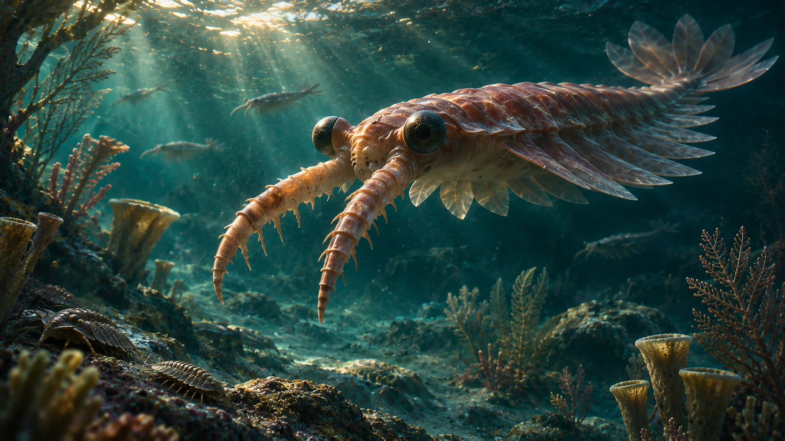

化石證據

物種環境展示AI 生成藝術復原圖 · 非化石證據
- 年代
- 寒武紀・烏溜期 Cambrian / Wuliuan
- 棲地
- 海洋水層；化石見於加拿大伯吉斯頁岩。 [1]
- 食性
- 肉食性；2023 年模型研究支持捕食游泳且身體柔軟的動物，而非壓碎硬殼獵物。 [2]
- 體型
- 完整標本約 25 公分；博物館依零散化石推估較大個體可能達約 1 公尺，並非完整標本實測值。 [1]
主要特徵
- 一對帶刺、分節的前附肢。 [1]
- 具柄的眼睛與朝下的口器。 [1]
- 身體兩側的游泳葉片與尾扇。 [1]
02 / DEEP EXPLORATION
深入探索
模型推論
捕食者，也有力學上的限制
2023 年研究結合三維重建、運動學、有限元素分析與流體模擬，測試前附肢的功能。結果支持抓取獵物，但不支持以此壓碎堅硬外殼；作者推測牠是捕捉水層中身體柔軟的獵物的敏捷游泳者。
[2]研究限制
仍需保留的未知
- 年代使用地層名稱，避免將不同定年的近似年數混為精確日期。
- 不把其他放射齒類的體型或習性直接套用到本種。
03 / REFERENCES & IMAGE DISCLOSURE
線索與出處
- Anomalocaris canadensis — The Burgess ShaleRoyal Ontario Museum · 查閱：2026-11-15
- Raptorial appendages of the Cambrian apex predator Anomalocaris canadensis are built for soft prey and speed (2023)Bicknell et al. / Proceedings of the Royal Society B · 查閱：2026-11-15
圖片說明
AI 生成藝術復原圖 · 非化石證據。使用者提供的 AI 生成藝術復原圖：奇蝦在寒武紀海洋中的近距離復原場景。原始檔：anomalocaris-canadensis-hero.png；非真實化石影像，形態與生態細節包含藝術想像。 作者：使用者提供；生成工具與模型未註明；授權：使用者提供供本專案使用；未提供額外再授權條款